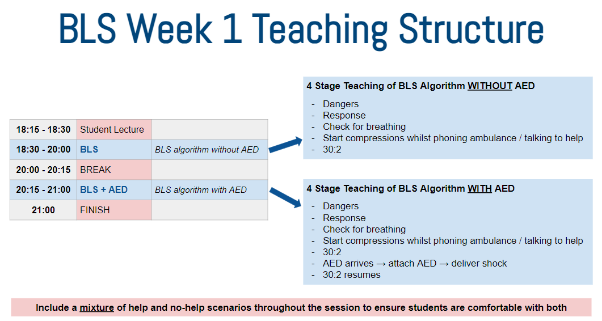
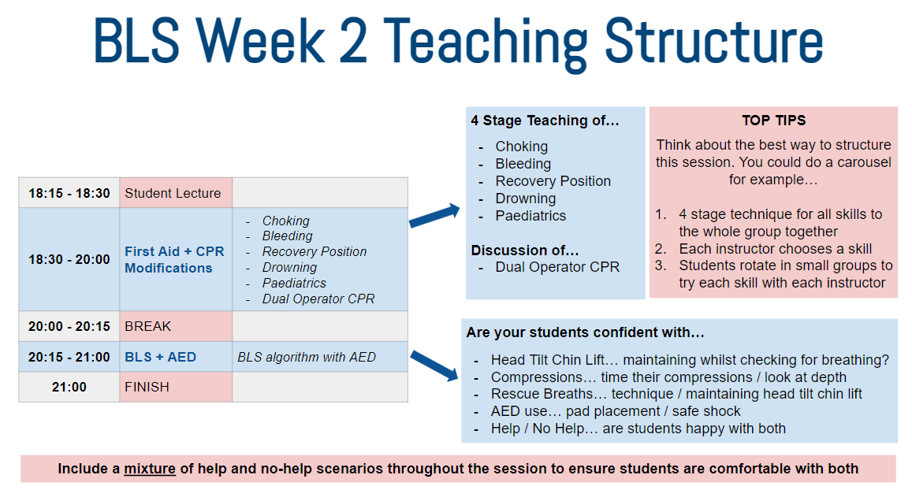
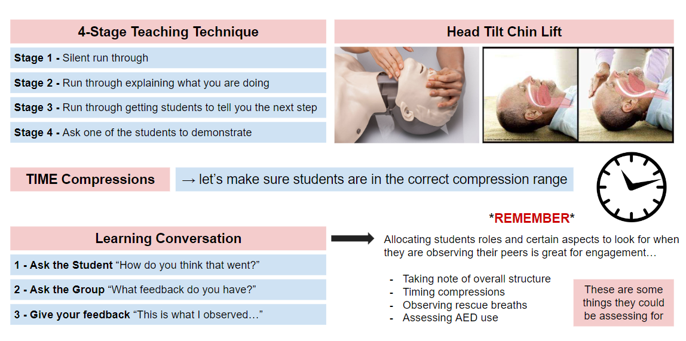

Instructor Guide 2026/27 - part 1 of 6. Teaching begins the Monday immediately after Instructor's Weekend, so there is usually very little time to prepare. Use this guide and make sure you've completed anything covered during the weekend. Urgent questions should go straight to student faculty.
Each course runs on a repeating 3-week cycle, taught on three consecutive Monday evenings:
Semester 1 runs 12 October - 7 December 2026.
Semester 2 runs 25 January - 22 March 2027.
Assessment evenings are always the third evening of each course.
Courses run back-to-back within each semester - one cohort finishes before the next starts, no parallel cohorts.
Semester 1
| Date | Focus |
|---|---|
| Mon 12 Oct 2026 | Compressions & AED |
| Mon 19 Oct 2026 | First aid & Recovery Position |
| Mon 26 Oct 2026 | Exam night |
| Mon 2 Nov 2026 | Compressions & AED |
| Mon 9 Nov 2026 | First aid & Recovery Position |
| Mon 16 Nov 2026 | Exam night |
| Mon 23 Nov 2026 | Compressions & AED |
| Mon 30 Nov 2026 | First aid & Recovery Position |
| Mon 7 Dec 2026 | Exam night |
Semester 2
| Date | Focus |
|---|---|
| Mon 25 Jan 2027 | Compressions & AED |
| Mon 1 Feb 2027 | First aid & Recovery Position |
| Mon 8 Feb 2027 | Exam night |
| Mon 15 Feb 2027 | Compressions & AED |
| Mon 22 Feb 2027 | First aid & Recovery Position |
| Mon 1 Mar 2027 | Exam night |
| Mon 8 Mar 2027 | Compressions & AED |
| Mon 15 Mar 2027 | First aid & Recovery Position |
| Mon 22 Mar 2027 | Exam night |
There is an instructor's briefing before every teaching night at 18:00, to iron out issues and share information before you head to your teaching rooms.
Equipment: 1 manikin and AED per instructor, plus a set of wipes.

4-Stage Teaching of BLS Algorithm WITHOUT AED:
4-Stage Teaching of BLS Algorithm WITH AED:
Include a mixture of help and no-help scenarios throughout the session so students are comfortable with both.
Equipment: same as Week 1, plus a choking set, baby/paeds manikin, and tourniquet set.

Think about the best way to structure the first aid + modifications block - a carousel works well: teach the 4-stage technique to the whole group together, have each instructor take a skill, then rotate students in small groups through each instructor.
By the end of Week 2, check your students are confident with: head tilt chin lift while checking for breathing, timing and depth of compressions, rescue breath technique, AED pad placement and safe shock delivery, and both help/no-help scenarios.
Cross-check all modification wording against the current standard: RCUK 2025 Resuscitation Guidelines - the same guidelines the course is teaching to this year (per pre-course faculty briefing).
